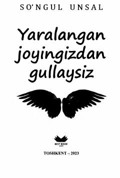

YJRuhiy jarohatlardan so'ng yangi kuch topib, qalban ulg'ayish va rivojlanish haqida ilhomlantiruvchi kitob.
Ushbu kitob insonning hayotdagi qiyinchiliklar va ruhiy jarohatlardan so'ng qanday qilib qaytadan kuch topib rivojlanishi haqida hikoya qiladi. Muallif Sevgi shifo ekanligini va har bir yaralangan qalbdan ham go'zallik unib chiqishi mumkinligini ta'kidlaydi. Asar kitobxonlarga ruhiy dalda va motivatsiya berishga qaratilgan.